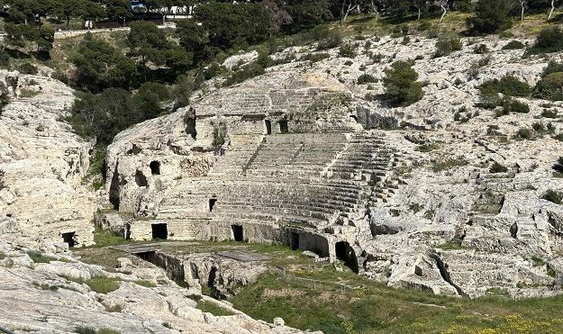

C A G L I A R I
La fundación de Cagliari se atribuye a los fenicios. Los griegos la conocían como Cardlis y los romanos como Caralis.
El anfiteatro romano de Cagliari fue construido
probablemente en fases alternas. La primera fase data entre finales del siglo I
y principios del siglo II, época de Trajano. Enclavado a los pies de la colina
de Buoncammino, con una capacidad de entre 8.000 y 10.000 espectadores. Excavado
en parte en la roca y en parte construida con bloques de piedra caliza. Todavía
hoy son muy visibles las gradas, la cavea,…
En una segunda fase, en la época Severa (193-211), se agrandó el tamaño del
anfiteatro con una galería con arcos abiertos. Además, también se construyó un
pequeño espacio destinado a un culto indefinido.
Con el paso de los años, durante siglos, sus restos fueron utilizados como
cantera. Las excavaciones revelaron, además de monedas y otros artefactos, una
gran cantidad de delgadas losasl, evidencia clara de que los escalones estaban
cubiertos con mármol.
Durante la época estival para ofrecer conciertos y espectáculos de todo tipo.
Otros restos de época romana son los de la Cueva de la Víbora, un hipogeo funerario romano situado en Viale Sant'Avendrace, en la necrópolis de Tuvixeddu. Fue construido por Lucio Casio Filipo en honor a su esposa, la matrona Atilia Pomptilla, en el siglo II.
En el barrio de Stampace es posible admirar la Villa de Tigellio, un complejo de ruinas romanas que datan del siglo I a.e-c. y estuvieron habitadas hasta el siglo VI. Un barrio residencial compuesto por tres casas patricias, dos de las cuales presentan cimientos estructurales claramente visibles.
En el yacimiento arqueológico de Santa Eulalia nos encontramos con una calzada pavimentada de más de 4m de ancho de la época romana y una calzada medieval superpuesta. Entre los hallazgos se encuentran los restos de un pequeño templo, una columnata y varias estancias, todas de la época romana, que fueron remodeladas durante la Edad Media.
